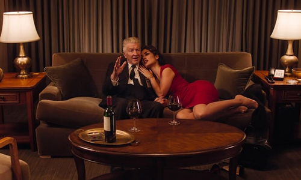
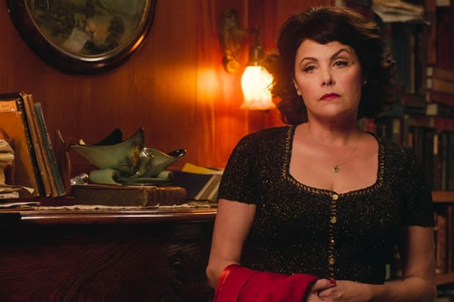
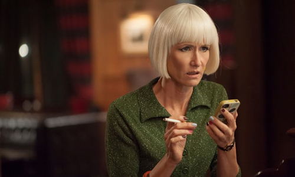
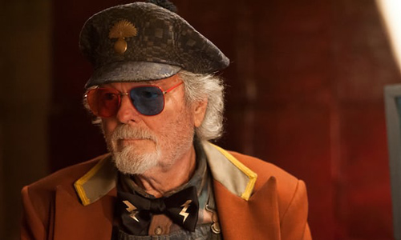

David Lynch seems to be leading us on more than ever. But with another brilliant, long-awaited return and everyone descending on the Bang Bang Bar, things look like they might finally be converging back in Twin Peaks.

Two thirds of the way along, we finally get the long-promised return of Audrey Horne. Sherilyn Fenn is back, but she couldn’t be more different from the schoolgirl who spent her days mooning after Agent Cooper and swaying to jazz only she could hear. It’s the most striking example yet of how our apple-pie memories of this place have been corrupted that this beacon of purity has grown into an embittered shrew. There she stands, admonishing her husband Charlie and rubbing his face in her affair with the unseen and apparently missing Billy. This, we must assume, is the Billy the stranger was looking for in the diner back in part seven. But there’s a heck of a lot of backstory (presumably) to come. There is a Tina, who is a “bitch”. There is a Chuck, who is “certifiable’. But who are they and, for that matter, who is Angela? Who is Clark? And what did Tina say to Charlie on the phone that so enraged Audrey when he (somewhat sadistically) refused to share it with her?

With Billy’s disappearance preoccupying Audrey, she is either ignorant about or unbothered by the murderous antics of her son (we presume) Richard. Responsibility seems to lie with his grandfather Ben, after Sheriff Truman pays him a visit to deliver the bad news. The big theory doing the rounds about Richard’s parentage and Audrey’s anger goes that following the events of season two, Evil Coop raped Audrey while she was in her coma and Richard was the result. It’s a horrendous but tempting idea to emerge from a Coop-less episode that’s hard to consider as much more than a placeholder. Lynch has always demanded our indulgence, but the pace here is wilfully glacial. Most significant storylines, it seems, have been playing out off-screen.

Meanwhile, agents Gordon and Albert continue to take things in an X-Files direction with Operation Blue Rose and the government’s supernatural division. Which is to say, Albert is doing this almost singlehandedly (Gordon is more interested in entertaining his French ladyfriend and working his way through that Damn Fine Bordeaux). Getting some work done, they recruit Diane to deputise on the investigation – and there’s something disconcerting at seeing cold, studied Diane exclaim “Let’s rock!” at the opportunity (a phrase itself steeped in Twin Peaks lore). The wider plan is to continue tracking her phone, presumably to get to the bottom of her link to Agent Cooper. For now, they simply learn that she HASN’T BEEN INVITED TO LAS VEGAS YET! Still, the coordinates on the dead arm lead her to Twin Peaks and some sort of reckoning. With Audrey also on her way to the Roadhouse (Bang Bang Bar) in search of Billy, things are looking like they might actually converge soon.
Back in the town itself, a haunted Sarah Palmer looks to be unravelling fast, buying all the vodka in the grocery store, having a meltdown triggered by turkey jerky, then finally taking refuge at home and concealing something in the kitchen. Grace Zabriskie is mesmerising in her brief appearances, and the emergence of the Badalamenti score moved us yet closer to ... well, Twin Peaks. Whatever terrible things have gone down under the baleful influence of the Black Lodge, we can’t be very far off now from not-quite-finding-out.

• Whimsical singer of the week from Gordon: “Do you realise Albert, that there are 6,000 languages spoken on Earth today?”
• I’m not even going to ask about Dr Amp’s Golden Shit Shovel.
• And what was with Dougie’s game of catch? And who was the guy shot by Tim Roth? As for Carl Rodd giving money to the tenant – perhaps these really are just random moments to punctuate the mood music.
• After a week off at the casino, we’re back at the Bang Bang Bar, and the funereal ambience playing us out comes from Portland’s Chromatics. Presumably we’re to make something of the two women gossiping.